![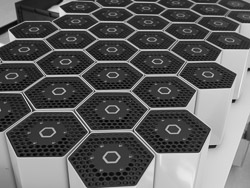 Protonet Corporate Identity David BurkhardtWhen joining the Protonet project as a hardware designer there was not much of a corporate identity. Thus, a focus of hardware design was to create a recognition value from scratch by using distinct color schemes and recurring shapes of Hexagons and Meshes. The Carla server launched in 2012 and the later Maya product, formed Protonets design language. Guided by this design language, graphic design agency npire created a complete set of matching screen and print design rules to create the branding Protonet is known for. 2009 Protonet GmbH 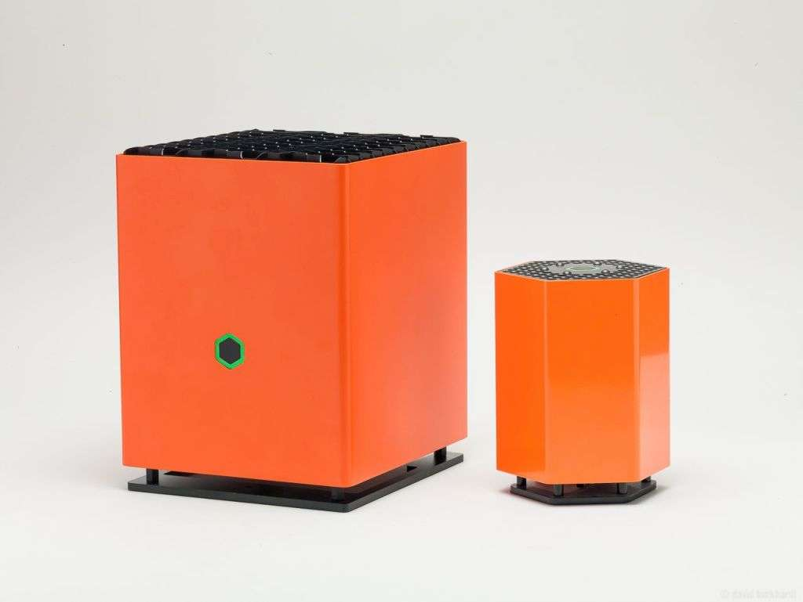](img/original/protonet_ci.jpg){kind=link}
![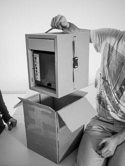 Packaging Upcycling David Burkhardt & Tobias Otto After use as a retail and disribution packaging, this cardboard box can be deployed as a desktop shelf. Pieces of cardboard, which are stored in the sides for additional protection during shipping, can be fitted into lugs inside the cardboard frame to create the shelf floors. The finished desktop shelf has two floors, for A4 sized Paper and a drawer. The design won a silver Nail for sustainability in the 2014 'ADC Award' show as well as the 'Preis für umweltfreundliches Produktdesign' (award for eco-friendly product design) in 2013. 2013 Protonet GmbH DS Smith cardboard D-flute 250 x 330 x 270mm (WxHxD) 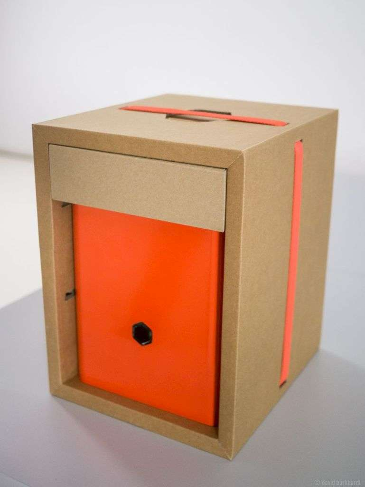 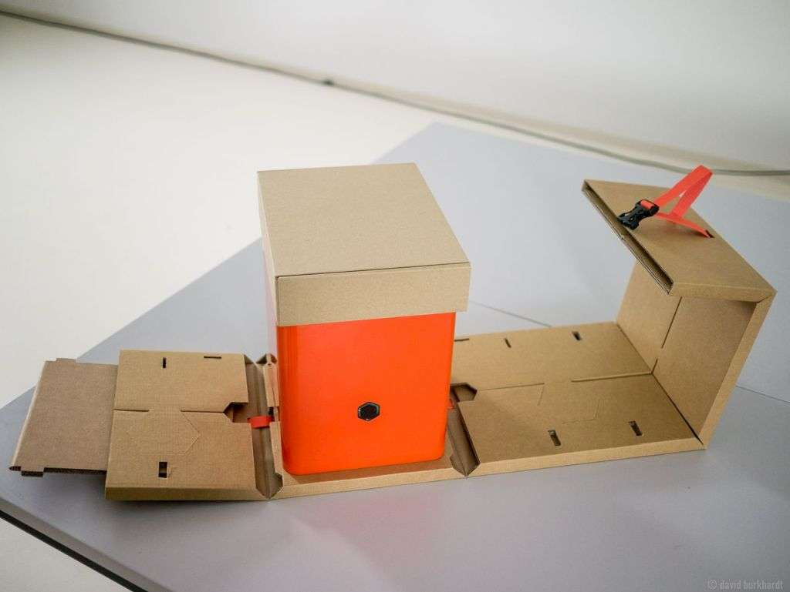 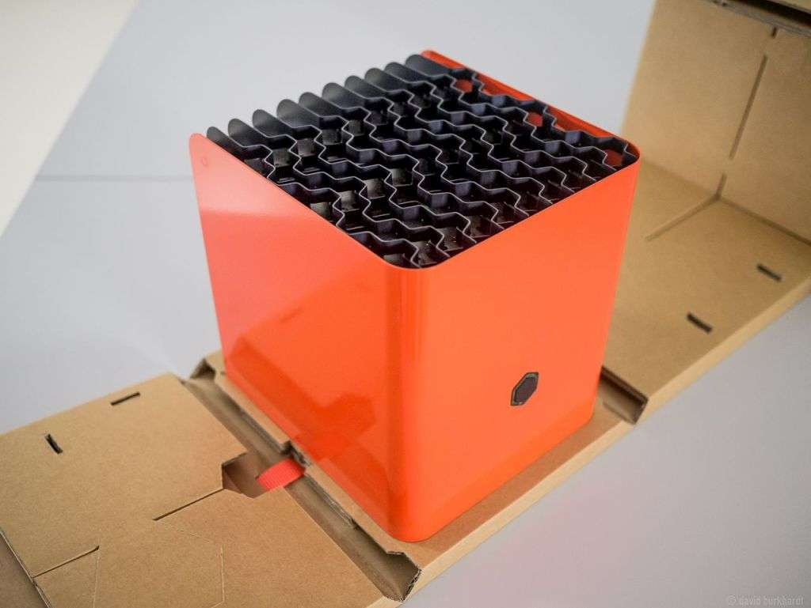 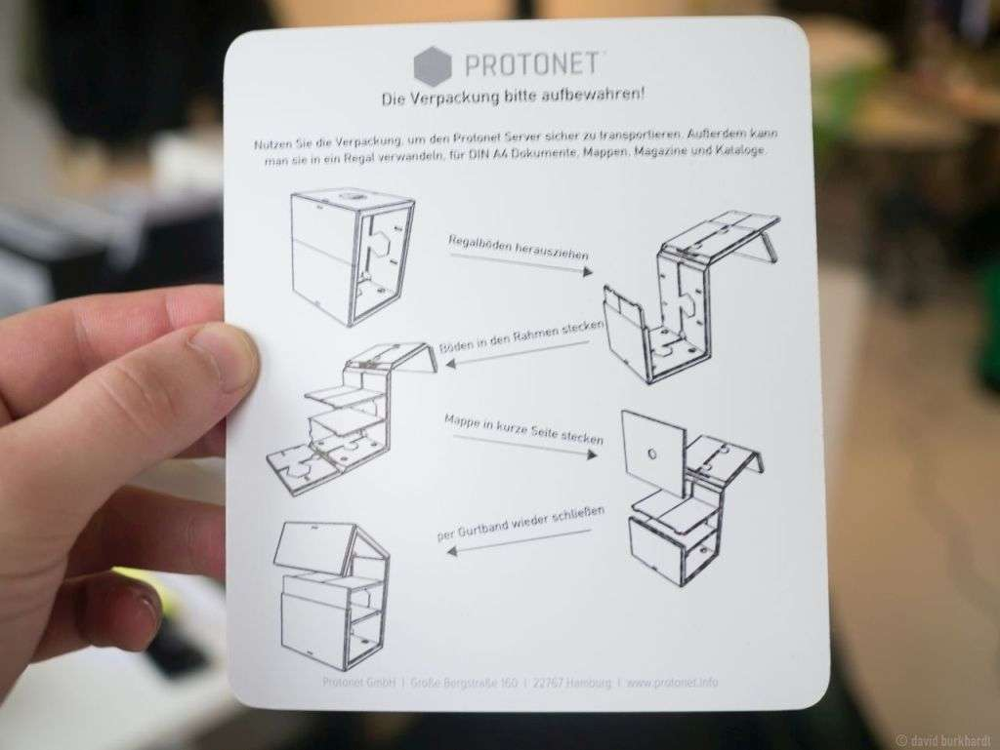 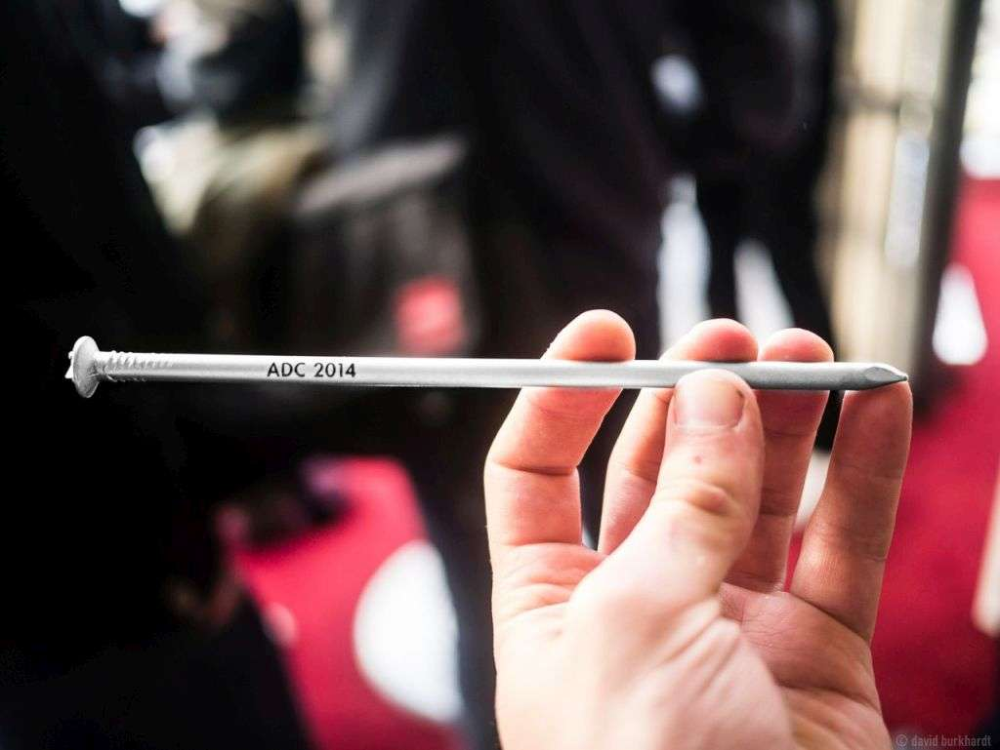](img/original/packaging_carla.jpg){kind=link}
{kind=link}
{kind=link}
{kind=link}

David Burkhardt is a product designer based in Hamburg, Germany. At age 17, he was co-founder of Netthelp, a student company offering IT-Services for schools which is still operating today. Later, still in high school, he went on to found his own company for cnc-milled water cooling devices and award-winning small form factor computers.
He then went on to study industrial design at the University of fine arts of Hamburg, in the class of Prof. Glen-Oliver Löw. During the time at HfbK he also worked for the CAD-Labs and Mixed Media Workshop. As of 2012 he joined Protonet GmbH, a hamburg based startup that would set an european crowd funding record and get chosen by the Y-Combinator accelerator program. Until 2016 he would design every major Protonet product and gain practical experience in manufacturing and process development.Teams that i have worked with:
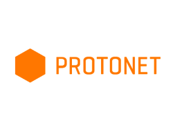 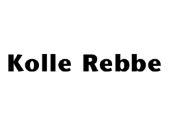
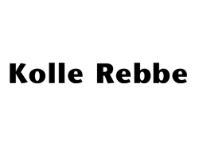
 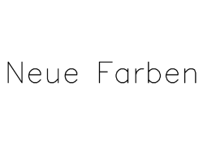
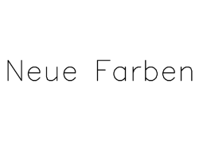

 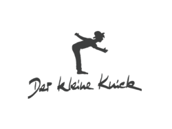
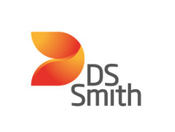
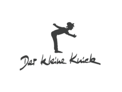
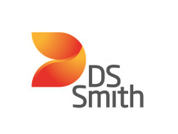
Awards:

Patent of the month at Hamburg Chamber of Commerce, 06/2015
Silver & bronze & Audience prize at ADC awards show 2014
Award for eco-friendly product design of the BSU Hamburg 2013
Prize of the President of VDI e.V. at Jugend forscht federal competition 2005
1st Prize: Technology at Jugend forscht state competition Hamburg 2005
start your product design.
get in touch.
on social media:
see works on:
Thingiverse
Instructables
Flickr